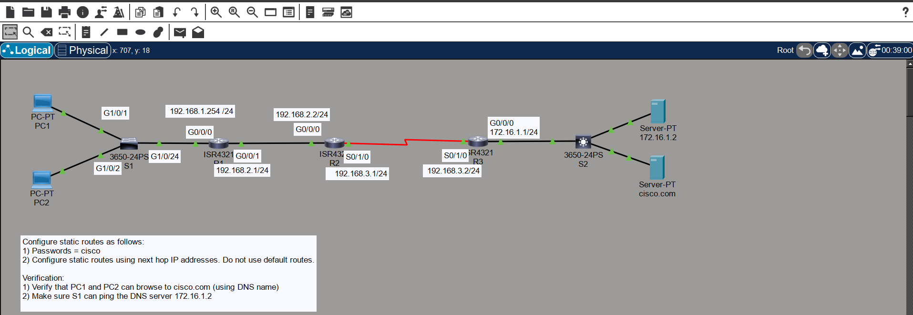
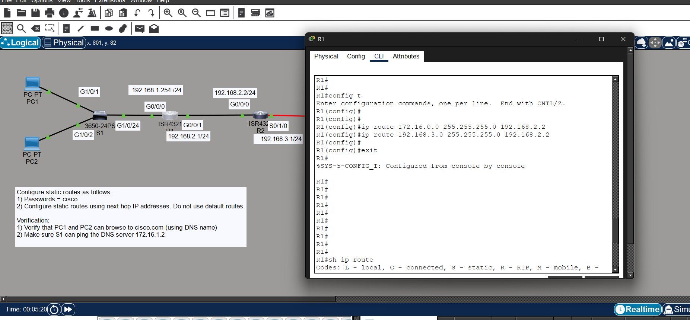
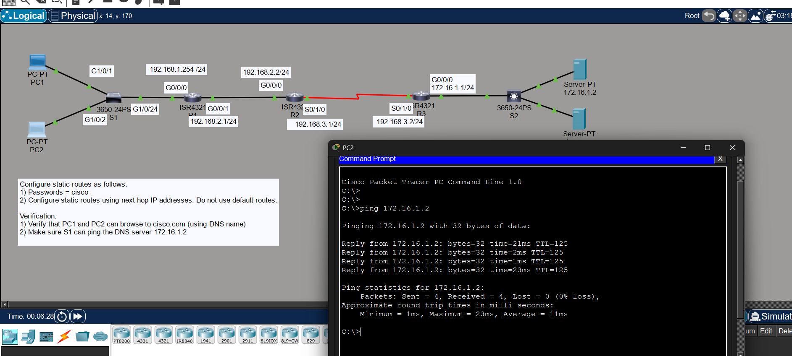
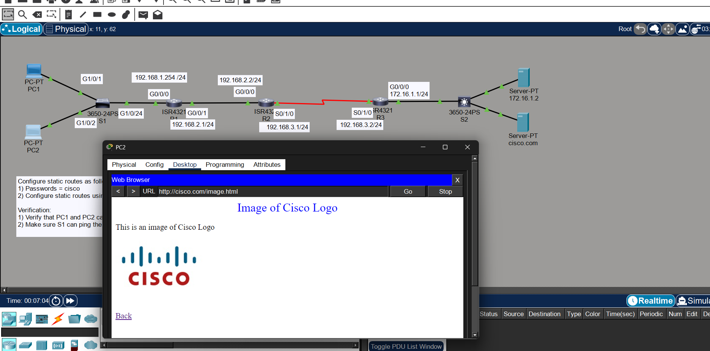

Static Routing is a method where routes are manually configured on a router to reach specific destination networks.
The administrator specifies the destination network, subnet mask, and next-hop IP address or exit interface. The router forwards packets strictly based on these manually configured entries.
Used in small networks, simple topologies, controlled environments, and as backup routes where fixed paths are required.
Three routers connect LAN (192.168.1.0/24) to Server Network (172.16.1.0/24). Traffic flows from PC network to server network through R1 → R2 → R3.

Below is the configuration used in this 3-router topology.
ip route 192.168.3.0 255.255.255.0 192.168.2.2 ip route 172.16.1.0 255.255.255.0 192.168.2.2
ip route 192.168.1.0 255.255.255.0 192.168.2.1 ip route 172.16.1.0 255.255.255.0 192.168.3.2
ip route 192.168.1.0 255.255.255.0 192.168.3.1 ip route 192.168.2.0 255.255.255.0 192.168.3.1

ping 172.16.1.2 ping cisco.com show ip route


Successful configuration allowed both PCs to ping the DNS server and access cisco.com using name resolution.